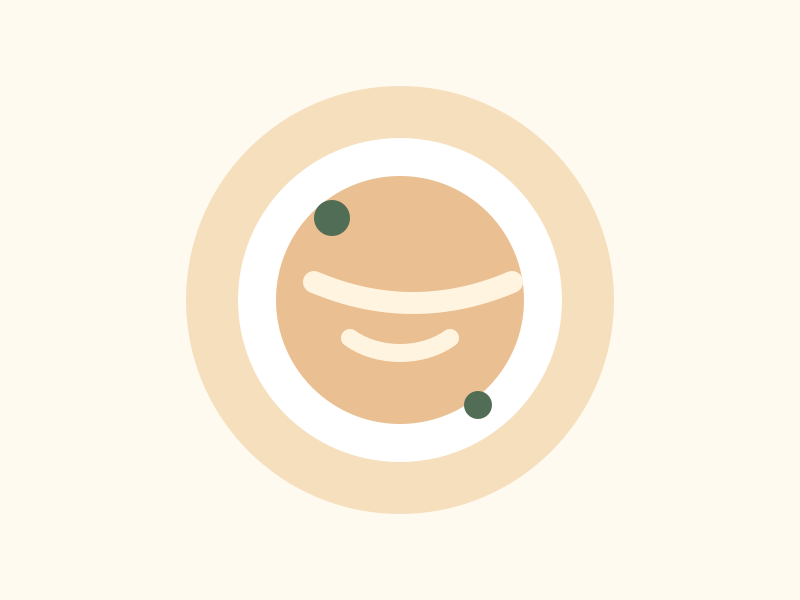

家常快手
鲮鱼油麦菜
10 分钟 · 简单 · 2 人份
快手菜下饭菜鲮鱼罐头油麦菜家常菜
Recipe Library
按分类、标签、工具和耗时筛一筛，找到今天最顺手的一道。
7 道菜谱
10 分钟 · 简单 · 2 人份

15 分钟 · 简单 · 2 人份

40 分钟 · 中等 · 2 人份

15 分钟 · 简单 · 1 人份

30 分钟 · 简单 · 2 人份

35 分钟 · 中等 · 1 人份

15 分钟 · 简单 · 2 人份